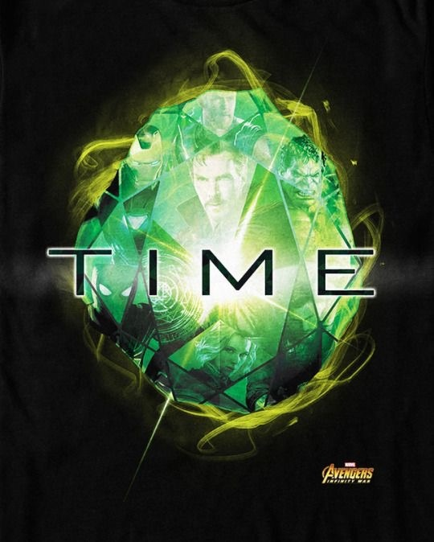

My Recipies
Only beings of immense power can directly wield the Stones, such as Celestials, and the Mad Titan Thanos. Lesser beings would face dire consequences: Johann Schmidt was cursed to Vormir to guard the Soul Stone after touching an active Tesseract, Jane Foster became ill after being exposed to the Aether, Carina exploded when she touched the Power Stone; however, these effects can be reduced if a group is sharing the power among themselves. It is also possible to place an Infinity Stone (or multiple) inside a container to allow the user to wield the Stone's power without suffering the normal repercussions. Examples include the Space Stone inside the Tesseract, the Mind Stone inside the Scepter and later in Vision's forehead, the Power Stone inside the Orb and later the Cosmi-Rod, the Time Stone inside the Eye of Agamotto, the Reality Stone as the Aether, and all of the Infinity Stones housed in the Infinity Gauntlet.
Power Stone

The Power Stone was one of the six Infinity Stones, the remnant of a singularity that predated the universe. The Power Stone was a powerful weapon capable of granting a person great, cosmic power, but was highly likely to kill any organic beings that touched it.
Time Stone
The Time Stone was one of the six Infinity Stones, the remnant of singularity that predated the universe. It had the ability to manipulate time, even in places "beyond" time, such as the Dark Dimension.
Mind Stone

The Mind Stone was originally portrayed as a power source for the Scepter. The Infinity Stone granted the Scepter such diverse abilities to fire energy projectile blasts, manipulate minds, enable teleportation, perform astral projection and allow mental communication.